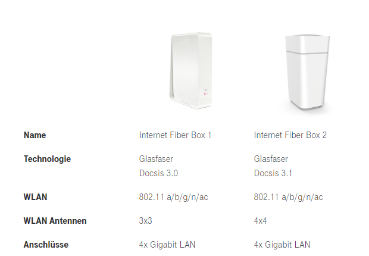

Ich ehrlich gesagt auch nicht mehr

Schönen Sonntag Abend,
Ich wende mich mit dem Post an euch, in der Hoffnung, dass jemand mir weiterhelfen kann.
Meine Fiber Box Nr. 2, erste wurde zurückgebracht, weil ich dachte, dass diese defekt sei, gibt bei gewissen verbunden Geräten ein störenden Geräusch von sich. Hört sich teilweise wie Spulenfiepen an... Einfach nur nervig....
Das beschriebene Problem ist derzeit nur wahrnehmbar, wenn mein S8 Handy oder die PS4 mit dem Router verbunden ist. Mein Samsung TV, darauf wird gestreamt, löst das Problem nicht aus. (eigenartig?!)
Ist das normal, muss ich mich damit abfinden oder gibt es eine simple Lösung für mein Problem?
Ehrlich gesagt will ich nicht weiterhin bei Magenta anrufen, die m√ºssen mich langsam f√ºr verr√ºckt halten.¬†¬†üôà
Freue mich auf hilfreiche Tipps.
Mfg
Nein, es kommt definitiv vom Router.
Ein Schwingkreis schwingt in einem von dir hörbaren Frequenzbereich. Da kannst du nicht wirklich was machen. Das ist ein elektrotechnischer zustand, auf den du so keinen Einfluss hast. Wenn die Box/Netzteil eine hohe Last zieht, da sie mehr Geräte versorgen muss, kann es zu diesem Geräusch kommen. Es kann echt nervig sein und ich versuche dann das Gerät in einen Raum zustellen, wo ich das Fiepen nicht mehr höre.
@Kowi
Also hast du die Fiber Box 1 oder 2?

Hmmmm... das ist natürlich sehr ärgerlich!
Ich habe die Nr.1 bei mir stehen.
Sollte so nicht sein.
Da wurde wieder schnell ein Gerät entwickelt, ohne ordentliche Tests im Labor - oder der Techniker hatte Probleme mit den Ohren.
Oder er war schlichtweg jemand von der älteren Generation. Meiner Mutter hört z.b dieses Fiepen auch nicht mehr.
Ich ehrlich gesagt auch nicht mehr

Ich habe mich schon daran gewöhnt das meine Grafikkarte Geräusche von sich gibt ,dann weiß ich wenigstens das sie da ist *scnr*

Es wird wahrscheinlich an der Auslastung liegen, sobald ich nur die 2,4 Ghz einstelle und die 5 Ghz deaktiviere, ist nichts zu hören. Die Frage ist halt, was soll ich machen, ich habe nur eine 80mb Leitung, ohne 5ghz ca. 20mb.
Das kann doch nicht sein, dass ich hier drosseln muss, damit nichts zu hören ist.
Gibt es Alternativen bei Magenta? Kann man auf die andere Fiber Box wechseln?
Habe das auch immer gehabt, bis ich das WLAN am Router selbst ausgeschalten und zu devolo gewechselt hab. Die neuen Geräte fiebn nichtmehr.
Muss also irgendwas mit dem WLAN Modul zutun haben.